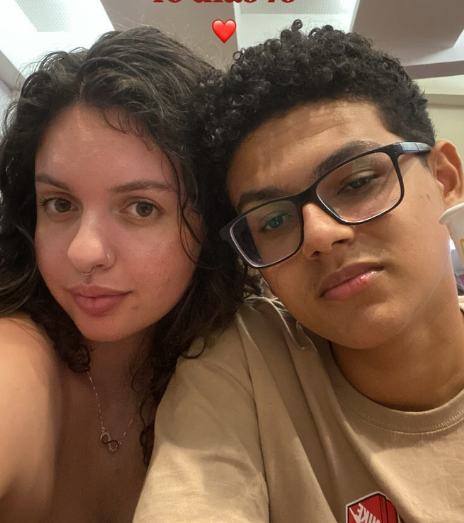
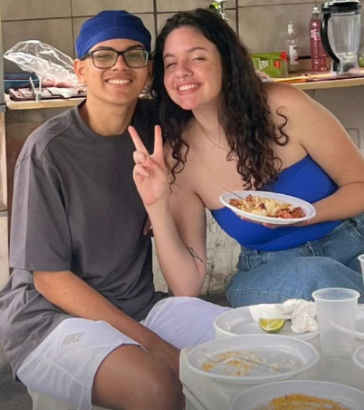

Páginas do Nosso Livro




Capítulos do Nosso Amor
- Mês 1: O primeiro “eu te amo”, tímido, mas verdadeiro 💞
- Mês 3: Nosso primeiro dia dos namorados juntos 🌼
- Mês 6: Meio ano juntos, celebrando com promessas sussurradas 🎉
- Mês 9: Palavras trocadas em silêncios que dizem tudo 💌
- Mês 12: Um ano de nós, um amor que só cresce ❤️
Para Você, Meu Tudo
"Você é a melodia que embala meus dias, a luz que guia meus passos. Nosso amor é um poema sem fim, e eu te amo em cada linha."
100 Motivos Para Te Amar
- Te amo pelo jeito que você me faz sorrir só de entrar no quarto.
- Te amo por como você fica linda mesmo sem maquiagem.
- Te amo pela sua risada que alegra meu dia.
- Te amo por me fazer sentir o cara mais sortudo do mundo.
- Te amo pelo jeito que você se aninha no meu peito.
- Te amo por entender minhas piadas ruins.
- Te amo por como você segura minha mão quando estamos juntos.
- Te amo por me fazer rir mesmo quando estou bravo.
- Te amo pela paciência que você tem comigo.
- Te amo por me mostrar um lado da vida que eu não conhecia.
- Te amo pelo perfume que você deixa na minha camisa.
- Te amo por sonhar comigo sobre nosso futuro.
- Te amo por cantar no carro mesmo sem saber a letra.
- Te amo por me apoiar quando eu mais preciso.
- Te amo por fazer café do jeito que eu gosto.
- Te amo pelo seu jeito desajeitado que me conquista.
- Te amo pelos apelidos que você inventa pra mim.
- Te amo por me fazer sentir o rei do seu mundo.
- Te amo por dançar comigo na sala sem motivo.
- Te amo pelo brilho nos seus olhos quando você fala de algo que ama.
- Te amo por me trazer calma só com sua presença.
- Te amo por como você valoriza as coisas simples.
- Te amo por me fazer acreditar que o amor existe.
- Te amo por ouvir minhas histórias sem se cansar.
- Te amo por me aquecer com seu corpo nas noites frias.
- Te amo por me inspirar a ser um homem melhor.
- Te amo por ficar tão fofa quando dorme.
- Te amo por torcer pelos meus sonhos como se fossem seus.
- Te amo por me deixar cuidar de você quando está triste.
- Te amo por como você diz meu nome com tanto carinho.
- Te amo pelos bilhetinhos que você deixa pra mim.
- Te amo por me fazer sentir vivo com um simples olhar.
- Te amo por ser minha fortaleza nos dias difíceis.
- Te amo por me ensinar a aproveitar cada momento.
- Te amo por como você me cuida quando eu esqueço de mim.
- Te amo por me fazer sorrir com suas mensagens bobas.
- Te amo pela sua voz que me acalma quando tudo dá errado.
- Te amo por me aceitar com todos os meus defeitos.
- Te amo pelas conversas que varam a madrugada.
- Te amo por me dar aquele frio na barriga toda vez que te vejo.
- Te amo por como você me protege com seu jeito doce.
- Te amo por roubar o cobertor e me fazer rir disso.
- Te amo por me fazer sonhar com uma vida inteira ao seu lado.
- Te amo por tratar todo mundo com tanto carinho.
- Te amo por me olhar como se eu fosse o único no mundo.
- Te amo por me fazer querer te abraçar o tempo todo.
- Te amo por como você fica linda com meu moletom.
- Te amo por transformar nossas brigas em momentos leves.
- Te amo por me dar seu tempo mesmo quando está ocupada.
- Te amo por me fazer sentir o homem mais amado do planeta.
- Te amo por como você me motiva com suas palavras.
- Te amo por fazer qualquer lugar parecer um lar comigo.
- Te amo pelas suas manias que me encantam.
- Te amo por me fazer querer te beijar a cada segundo.
- Te amo por me animar com seu jeitinho único.
- Te amo por cada lembrança que construímos juntos.
- Te amo por me fazer sentir o cara mais especial do mundo.
- Te amo por como você pede desculpas com aquele olhar.
- Te amo por me fazer gostar de acordar cedo só pra te ver.
- Te amo por me provocar com seu sorriso travesso.
- Te amo por me fazer rir das minhas próprias besteiras.
- Te amo por cozinhar pra mim mesmo queimando um pouco.
- Te amo por me dar toda a sua atenção quando falo.
- Te amo por me consolar com um abraço apertado.
- Te amo por me fazer sentir saudade mesmo estando tão perto.
- Te amo pelas mensagens que você manda do nada.
- Te amo por me fazer querer dançar mesmo sem saber.
- Te amo por me corrigir com aquele tom carinhoso.
- Te amo por me fazer acreditar que somos pra sempre.
- Te amo por como você fica brava e ainda assim é linda.
- Te amo por acelerar meu coração com um simples toque.
- Te amo por me abraçar por trás e me surpreender.
- Te amo por me fazer amar dias chuvosos com você.
- Te amo por suas ideias loucas que me divertem.
- Te amo por me fazer querer te agradar todo dia.
- Te amo por estar ao meu lado mesmo quando eu não mereço.
- Te amo por me ensinar a dividir até minhas besteiras.
- Te amo por me fazer cócegas só pra me ver rir.
- Te amo por me fazer sentir seguro com seu amor.
- Te amo por me surpreender com seu jeito único.
- Te amo por me fazer querer te mimar sem parar.
- Te amo pelas suas histórias que me prendem.
- Te amo por me fazer querer ouvir você o dia todo.
- Te amo por me dar força quando eu penso em desistir.
- Te amo por me fazer amar os silêncios ao seu lado.
- Te amo por me acordar com aquele sorriso lindo.
- Te amo por me fazer querer te abraçar até o fim do dia.
- Te amo por como você me faz feliz sem nem tentar.
- Te amo por me ensinar o que é amar de verdade.
- Te amo por como suas mãos parecem feitas pras minhas.
- Te amo por me fazer querer te olhar por horas.
- Te amo por me fazer sonhar com nossa casa juntos.
- Te amo por me inspirar a escrever sobre você.
- Te amo por me trazer paz com um simples beijo.
- Te amo por me fazer querer te proteger sempre.
- Te amo por me fazer rir das coisas mais bobas.
- Te amo por me fazer sentir que sou tudo pra você.
- Te amo por ser minha namorada, minha melhor amiga.
- Te amo por ser a mulher que eu sempre quis ao meu lado.
- Te amo por me dar um motivo novo todo dia para te amar.